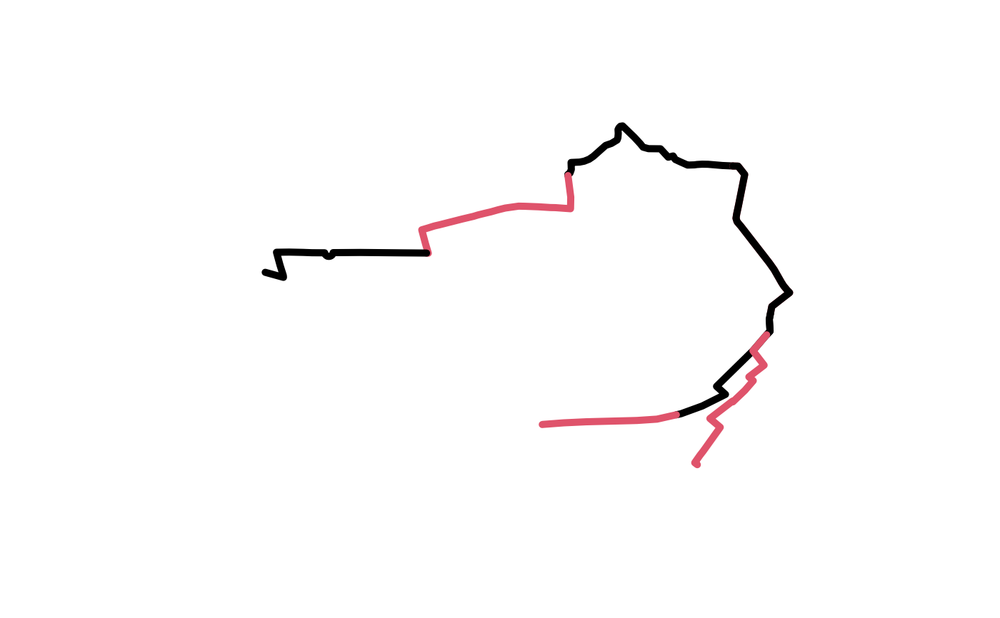
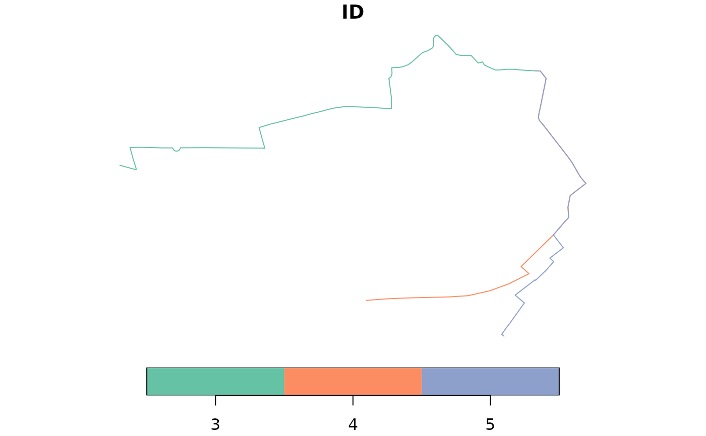

Divide an sf object with LINESTRING geometry into regular segments
Source:R/linefuns.R
line_segment.RdThis function keeps the attributes.
Note: results differ when use_rsgeo is TRUE:
the {rsgeo} implementation will be faster.
Results may not always keep returned linestrings below
the segment_length value.
The {rsgeo} implementation does not always
return the number of segments requested due to an upstream issue in the
geo Rust crate.
Arguments
- l
A spatial lines object
- segment_length
The approximate length of segments in the output (overrides n_segments if set)
- n_segments
The number of segments to divide the line into. If there are multiple lines, this should be a vector of the same length.
- use_rsgeo
Should the
rsgeopackage be used? Ifrsgeois available, this faster implementation is used by default. Ifrsgeois not available, thelwgeompackage is used.- debug_mode
Should debug messages be printed? Default is FALSE.
Examples
library(sf)
l <- routes_fast_sf[2:4, "ID"]
l_seg_multi <- line_segment(l, segment_length = 1000, use_rsgeo = FALSE)
l_seg_n <- line_segment(l, n_segments = 2)
#> Setting n_segments to 2 for all lines
l_seg_n <- line_segment(l, n_segments = c(1:3))
# Number of subsegments
table(l_seg_multi$ID)
#>
#> 3 4 5
#> 3 3 2
plot(l_seg_multi["ID"])
 plot(l_seg_multi$geometry, col = seq_along(l_seg_multi), lwd = 5)
plot(l_seg_multi$geometry, col = seq_along(l_seg_multi), lwd = 5)

round(st_length(l_seg_multi))
#> Units: [m]
#> [1] 1013 1014 955 875 770 647 986 881
# rsgeo implementation (default if available):
if (rlang::is_installed("rsgeo")) {
rsmulti = line_segment(l, segment_length = 1000, use_rsgeo = TRUE)
plot(rsmulti["ID"])
}

# Check they have the same total length, to nearest mm:
# round(sum(st_length(l_seg_multi)), 3) == round(sum(st_length(rsmulti)), 3)
# With n_segments for 1 line (set use_rsgeo to TRUE to use rsgeo):
l_seg_multi_n <- line_segment(l[1, ], n_segments = 3, use_rsgeo = FALSE)
l_seg_multi_n <- line_segment(l$geometry[1], n_segments = 3, use_rsgeo = FALSE)
# With n_segments for all 3 lines:
l_seg_multi_n <- line_segment(l, n_segments = 2)
#> Setting n_segments to 2 for all lines
nrow(l_seg_multi_n) == nrow(l) * 2
#> [1] TRUE